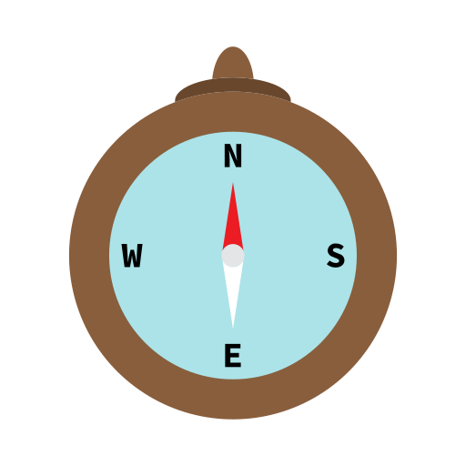
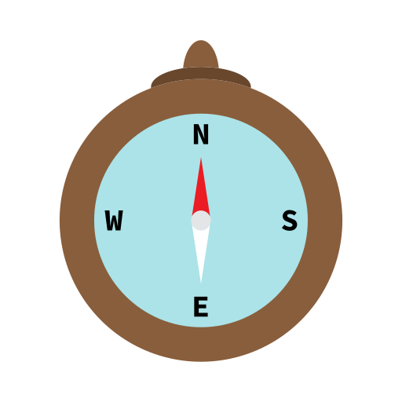

Camps
 

Education
The most effective way to plan for temperature and weather changes in the Uintas is to be prepared for both hot & dry and cold & wet Rain jacket and rain pants- do not bring ponchos Quick dry shirts and shorts long sleeve cotton shirt and pants- helps keep you cooler on hot days. Button down shirts provide more sun protection on the neck Light Weight Cotton Pant, Nylon Pant. Over the base layer, wear a pair of quick dry pants and the shirt of your choice (polypropylene if you are cold, cotton if you are hot). Sunglasses used for hiking and good shoes to protect your feet from the sun. Bring something comfortable to wear around camp. Cotton Sleep wear: You might choose to sleep in your camp wear. Otherwise, you might like to bring something comfortable to sleep in. water bottle small day pack for hikes moisturizing lotion headlamp or flashlight moleskin waterproof sunscreen and lip balm optional items: gloves fleece jacket towel bandana small pillow hygiene products: toothpaste, toothbrush, tissue, nail clippers, feminine hygiene products, extra eyeglasses or contacts, biodegradable soap and shampoo, camera equipment, book, watercolors, journal and pen.
Tutorials
This page will help the novice camper to plan the best camping trip. You will never forget your camping experience. The breathtaking scenery will make one truly unforgettable experience. The High Uintas are filled not only with exhilarating places to explore, but with Henry's Fork trail head accessible only by driving through Wyoming. The hike uses some of the same skills to summit the peak. The photos and videos should help the camper plan for their trip.
Join Us